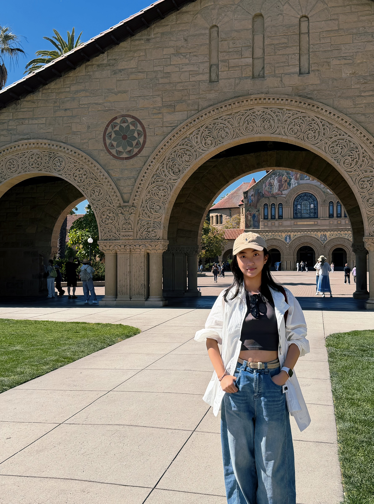

Zimeng Lu
Biomedical Informatics Student
Exploring AI + Neuroscience
@ Zhejiang University & The University of Edinburgh
About
Hi! I’m Zimeng Lu, a second-year Biomedical Informatics student in the dual-degree programme at Zhejiang University and the University of Edinburgh. My experience spans computational modelling, bioinformatics, and wet-lab research.
I’m interested in the intersection of artificial intelligence, neuroscience, and engineering, particularly neural decoding, neural signal processing, and machine learning for neural data.
Education
Zhejiang UniversityHangzhou, China
B.Sc. in Biomedical Informatics (Dual Degree)Sep 2025 – Present
The University of EdinburghEdinburgh, UK
BSc (Hons) in Biomedical Informatics (Dual Degree)Sep 2025 – Present
- Average Mark: 90.80/100; GPA: 4.11/4.30
- Main Courses: Advanced Mathematics (Calculus, Linear Algebra, Probability & Statistics), Integrated Biomedical Sciences, Introduction to Cellular and Molecular Biology, Introduction to Biomedical Informatics, College Chemistry
University of California, BerkeleyBerkeley, US
Summer SessionsJul 2026 – Aug 2026
- Grade: A (4.00/4.00)
- Course: UGBA 195T – Topics in Entrepreneurship
Honors & Awards
Honors
- Zhejiang University Second-Class Scholarship2025–2026
- Outstanding Student, Zhejiang University2025–2026
Competitions
- Mathematical Contest in Modeling (MCM)Feb 2026
- Successful Participant (S Award)
Skills
- Programming: Python, Java, R
- Computational Methods: Mathematical Modeling, Statistical Analysis, Data Preprocessing, Dimensionality Reduction, Clustering
- Bioinformatics: Scanpy, Spatial Transcriptomics Analysis, Sequence Homology Screening, Biosynthetic Gene Cluster Analysis
Languages
Mandarin (native) > English (advanced) > Korean (beginner)
Hobbies
- Music: Westlife, Backstreet Boys, A1
- Chocolate: Always happy to discover a new favorite!
- Dancing, Fitness, Hiking, Traveling...